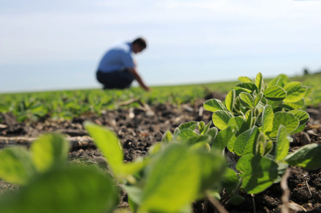

Interests and Hobbies
Agronomy and Horticulture
Having grown up on a farm, I have always had an interest in plants. My career so far has focused on this interest, having worked in both open-field and controlled environment crop production.
Technology
I am fascinated by technology and how it is being applied in our world. Given my background, I am most intrigued by how technology is being used to improve agriculture.
Music
I enjoy listening to and playing music, with my favorite genre being Punk / Metal. However, I often listen to a wide variety of artists who produce other types of music. I also am learning to play the Great Highland Bagpipes! It has been a very challenging instrument to become proficient in, and I have much to learn. I am hoping to become a full member of my local pipe band once I am good enough to play in parades.